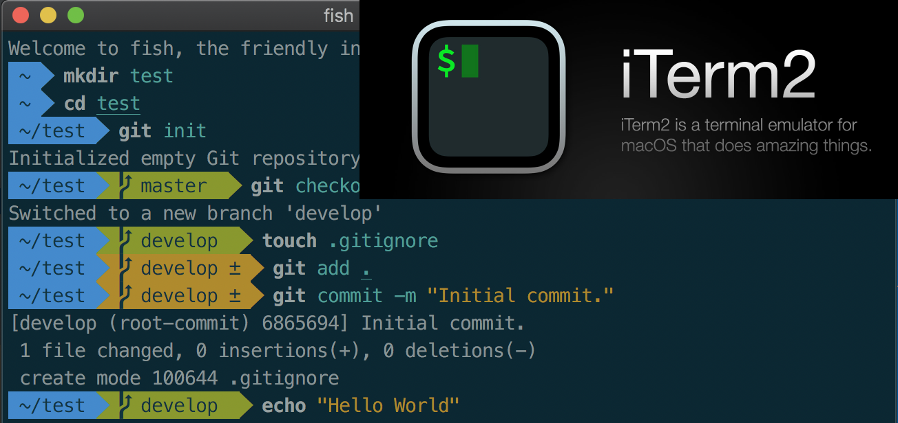
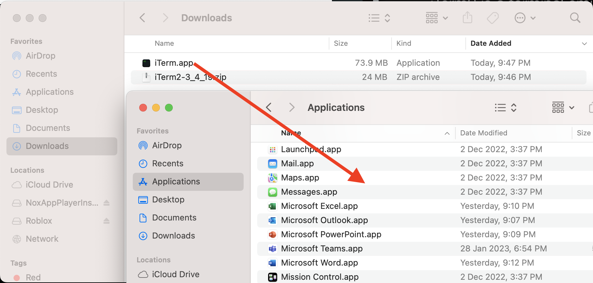
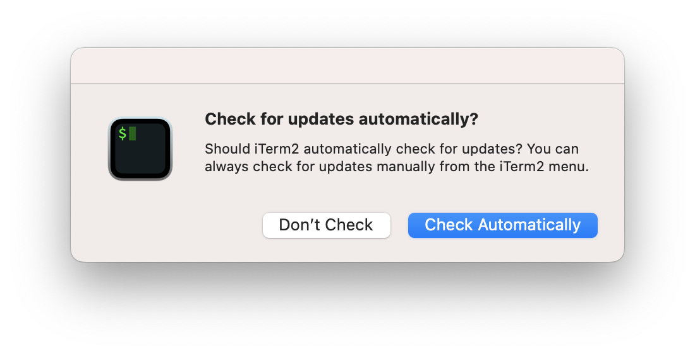
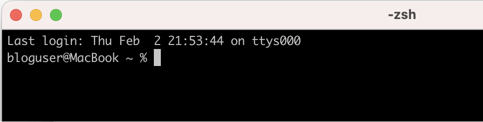
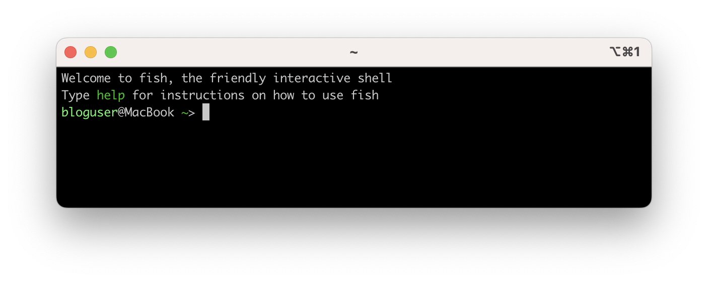
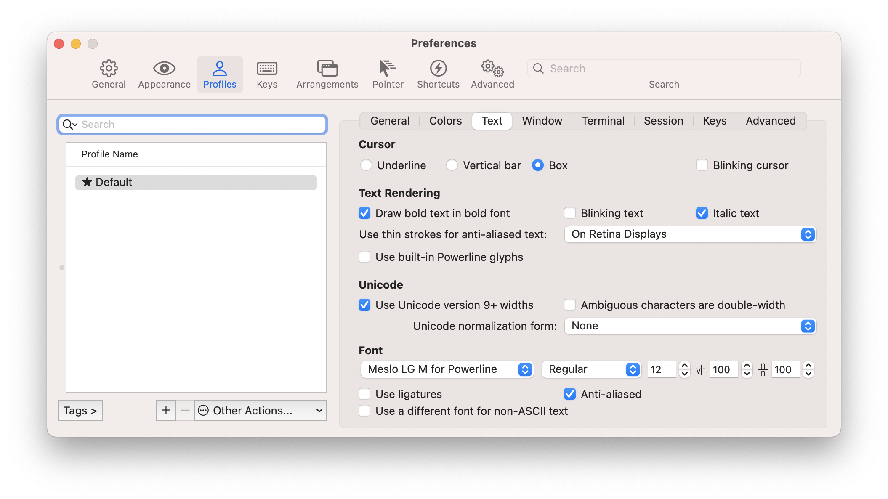
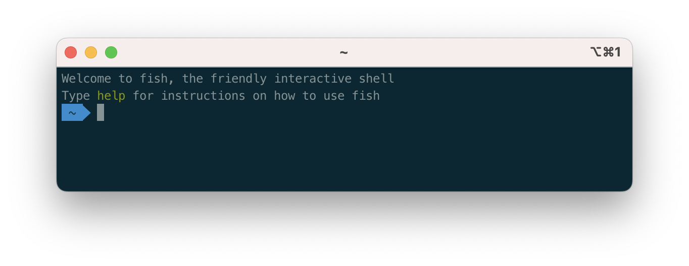
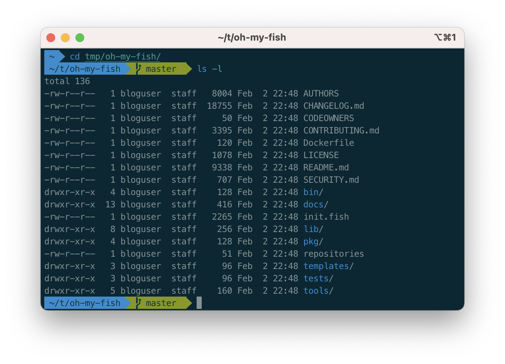

iTerm2 with Fish Shell
Fish Shell with Solarized Theme
iTerm2 is a popular terminal emulator for macOS, designed to replace the built-in Terminal application. It offers features such as split panes, customizable profiles, triggers, search, paste history, and more. It is free, open source, and actively maintained by a community of developers.
For those who are familiar, iTerm2 is a superior option compared to the terminal application in Mac OS. This guide will walk you through the process of configuring iTerm2 for improved daily productivity by customizing its appearance with cool colors and clear fonts.
iTerm2 Installation
Initially, obtain the iTerm2 application from its official website.
https://iterm2.com/downloads.html
Note
It is advisable to use a stable version of iTerm2 for work or official purposes. At the time of writing this tutorial, 3.4.19 is the stable version.
A simple zip file will be downloaded. Extract the contents and move the iTerm.app file to Application directory.
You can launch the iTerm application using any of your favorite method now. At the first launch, it may prompt you for auto-update option. It’s highly recommended to enable the auto update by pressing “Check Automatically”
The iterm2 is ready to use now and below is the look of the iterm2 terminal window. It’s time to modify the look and feel.
Homebrew Installation
The below code will download and install the MacOS package manager Homebrew for the local user. It may prompt you for some information and warnings. The default answers should be good for most cases.
1/bin/bash -c "$(curl -fsSL https://raw.githubusercontent.com/Homebrew/install/HEAD/install.sh)"
Fish Shell Installation
Use the below command to install fish shell.
1brew install fish
Write the fish shell to system shells.
1echo "/usr/local/bin/fish" | sudo tee -a /etc/shells
Open the iTerm2 profiles by iTerm2 > Settings > Profiles. If you want to use only fish shell, use the Default profile. Else, you can create a new profile as per your requirement. In my case, I’m using the Default profile.
Under Command section drop-down, select “Command” and add the the below command.
1/usr/local/bin/fish
This will make the iTerm to start in fish shell at startup.
Close the setting window and restart iTerm2 to apply the new changes. You can see the look has changed as below.
Oh-my-fish Installation
Oh My Fish provides core infrastructure to allow you to install packages which extend or modify the look of your shell. More information can be found in https://github.com/oh-my-fish/oh-my-fish.
Run this command to install oh-my-fish.
1curl https://raw.githubusercontent.com/oh-my-fish/oh-my-fish/master/bin/install | install
If your fish installation was not sucessful, you may have issues running this command in iTerm2 since this is a fish shell. please use the default Terminal application and save the script using below command. This will download and save the script to a file /tmp/install
1cd /tmp
2curl https://raw.githubusercontent.com/oh-my-fish/oh-my-fish/master/bin/install > install
Once the file is saved, run below commands to add execution permission and run it.
1chmod +x install
2./install
Restart the iTerm2, notice the prompt has changed as below.
oh-my-fish agnoster package Installation
Agnoster is a fish theme optimized for people who use Git kind of commands regularly. More information can be found in https://github.com/oh-my-fish/oh-my-fish/blob/master/docs/Themes.md#agnoster.
Use the below command to install the theme
1omf install agnoster
Powerline Font Installation
These fonts are pathed to adjust all symbolic outputs of fish and all related themes. Run the below commands to install the fonts to current user’s fonts directory.
1git clone https://github.com/powerline/fonts.git --depth=1
2cd fonts
3./install.sh
4cd ..
5rm -rf fonts
Now, open the iTerm2 profile again, switch to Text section and change the font to “Meslo LG M for Powerline”. If needed, adjust the font sizes.
Restart the iTerm and notice the change in iTerm2 prompt.
Solarized Color Installation
As of this point, the intended look appeared but the colors are not comfortable. Please install the “Solarized Dark - Patched” color scheme to get the best colors in iTerm window and fonts.
Save as this link in your local Downloads Solarized Dark Patched Color Preset.
Double click and import the color scheme
Open the iTerm2 profile again, switch to Colors section.
Under “Color Presets” drop down menu, chose “Solarized Dark - Patched”
Restart the iTerm and notice the change in iTerm2 prompt as below. This is our final look we are intended.
 